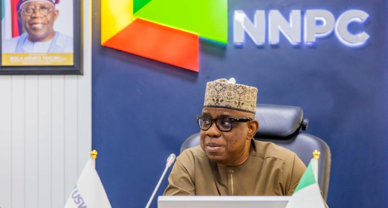

NNPC Dismisses Missing $2.04bn Duke Oil Crude Proceeds Reports

The Nigerian National Petroleum Company (NNPC) Limited has rejected reports that $2.04 billion in proceeds from crude cargoes lifted by Duke Oil Company Incorporated, now NNPC Trading S.A., is missing or unaccounted for. The company said the amount represents the gross value of 29 cargoes whose proceeds were reconciled under the Direct Sale Direct Purchase (DSDP) programme.
In a statement issued Tuesday in Abuja, NNPC Chief Corporate Communications Officer Andy Odeh said crude revenues were offset against the cost of refined petroleum products supplied to the Nigerian market. The company said the apparent gap arose because some cargoes did not generate separate dollar receipts. Crude was priced in dollars, while products supplied under the arrangement were sold in naira.
NNPC said all 59 cargoes under review were accounted for and reconciled with their respective beneficiaries. It reported that 30 cargoes were paid for in dollars, while proceeds from 28 cargoes, valued at about $1.96 billion, were remitted in naira to the NNPC Group Treasury or NNPC Upstream Investment Management Services accounts. The remaining cargo, a February 2023 Bonga tax-oil lifting valued at about $75.9 million, was paid into the then-designated dollar account of the Federal Inland Revenue Service.
The company said the transactions were reflected in the audited financial statements of the relevant entities. It also defended Duke Oil’s status as a separate trading subsidiary, saying it was incorporated in 1989 as a wholly owned NNPC company. NNPC said the ownership is documented in its corporate history, audited accounts and the Nigeria Extractive Industries Transparency Initiative’s 2023 industry report.
NNPC added that dedicated trading subsidiaries are used in the global oil and gas industry and that transactions between related entities are disclosed under International Financial Reporting Standards.
Source: Channels TV